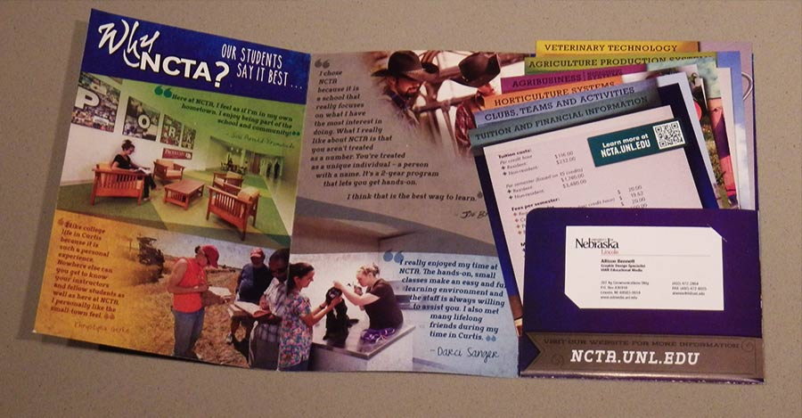
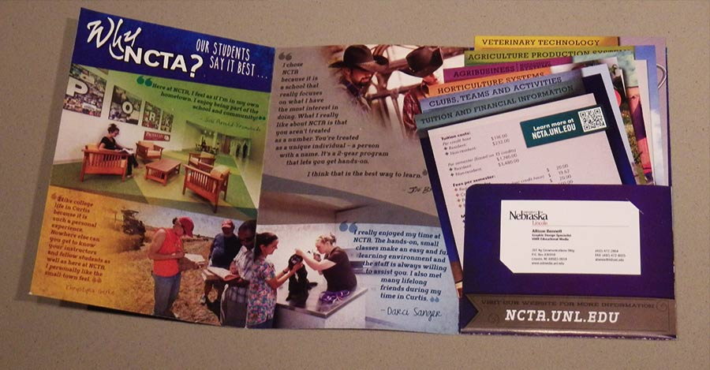

ALLISON BENNETT
STRATEGIC DESIGNER.MAKE IT PRETTY. MAKE IT SMART.
A consistent look and feel for NCTA (Nebraska College of Technical Agriculture) across print and digital media.
EXPERIENCE GAINED ||| Gained experience with stretching a consistent look and feel across many types of media. ||| Strengthened project management and client relations skills. ||| Worked with nontraditional folds on print projects. ||| Managed the process of a complete website reorganization and redesign including HTML and CSS formatting.
Visit the website here.
Visit the website here.
 
